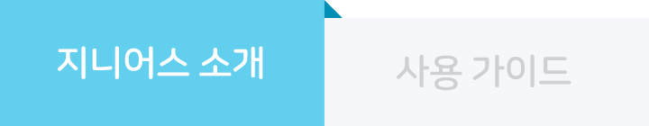

지니어스 소개
사용 가이드
이렇게 좋은 신규버전 설치가 아직이신가요? 지금 바로 마켓에서 앱 업데이트를 해보세요!
업데이트 하기
음성 명령에서 사운드 검색까지
만나서 반가워요 감성 AI 지니어스
지니보이스의 진화 지니어스한 음악 AI
국내 최초 음악 AI 지니보이스 기술과 SoundHound의 사운드 서치 엔진이 더해진 지니의 진화된 AI 서비스입니다.
지니보이스의 진화 지니어스한 음악 AI
국내 최초 음악 AI 지니보이스 기술과 SoundHound의 사운드 서치 엔진이 더해진 지니의 진화된 AI 서비스입니다.